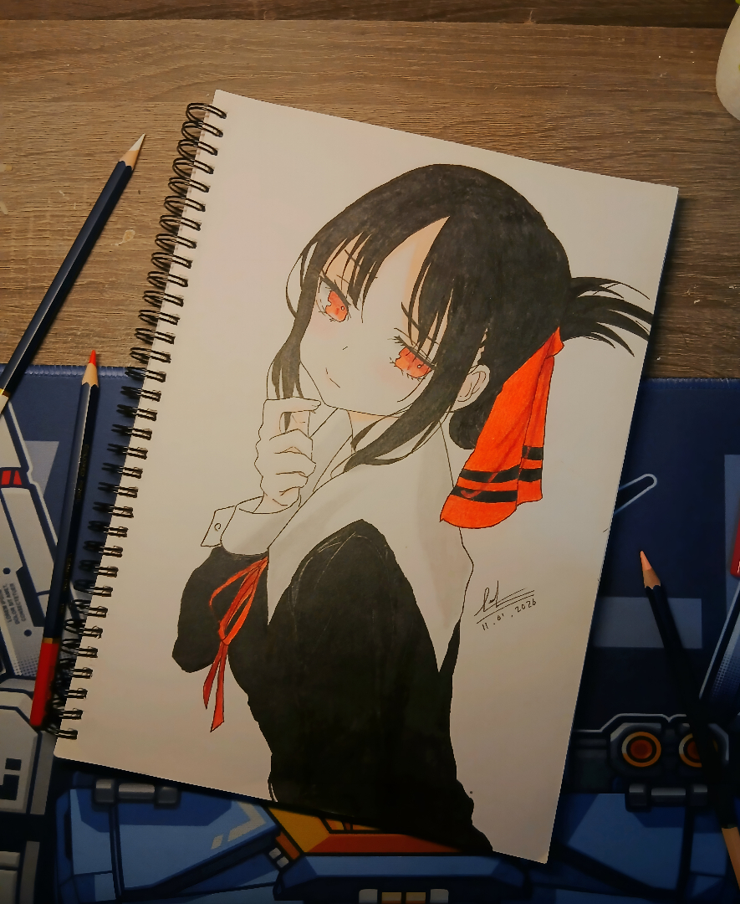
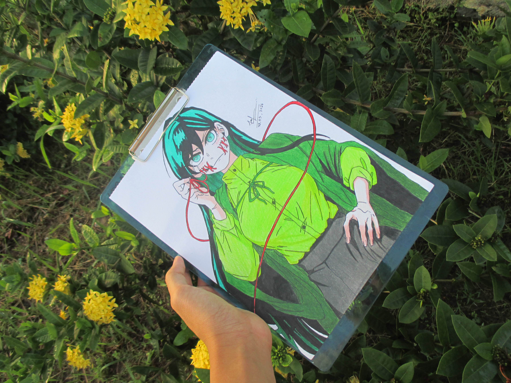
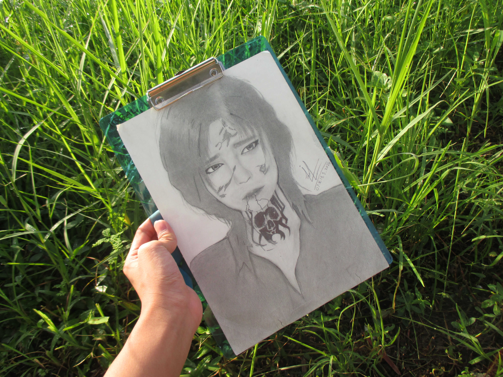
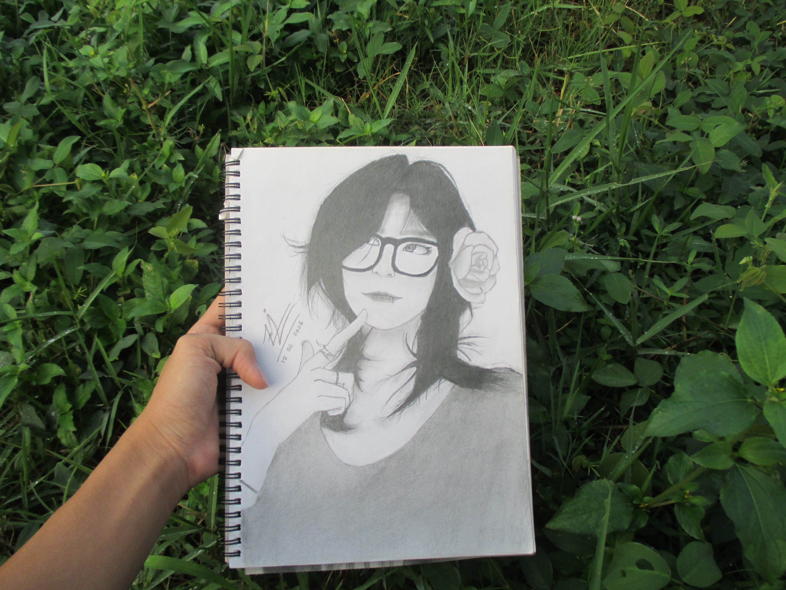

Menggambar sudah menjadi salah satu hobi saya sejak kecil. Biasanya saya menggambar secara
manual menggunakan pensil di atas buku gambar, dan jenis gambar yang paling sering saya buat
adalah gambar realistis, terutama wajah atau sosok orang, saya cukup suka memperhatikan detail
seperti bentuk wajah, bayangan dan tekstur agar hasil gambarnya terlihat semirip mungkin dengan aslinya.
Proses menggambar realistis biasanya saya mulai dari membuat sketsa dasar terlebih dahulu, baru kemudian
dilanjutkan dengan menambahkan detail dan bayangan sedikit demi sedikit. Saya sering mengambil referensi dari
pinterest,
Saya tidak menggambar setiap hari, biasanya hanya ketika sedang ada mood atau waktu luang. Meski begitu, bagi saya
menggambar adalah cara yang menyenangkan untuk melepas penat dan melatih kesabaran, karena gambar realistis butuh
ketelitian
serta waktu juga masih terus belajar, karena ke depannya saya ingin lebih serius mengembangkan skill ini. Berikut
beberapa karya gambar yang sudah saya buat sejauh ini:



